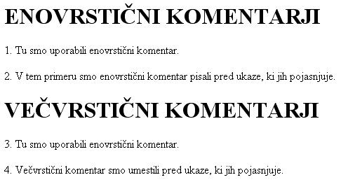

Ne živimo zato, da jemo, temveè jemo zato, da živimo. (Sokrat)
 Slika 1 in 2: Komentarji - koda in videz spletne strani 1. Izdelaj spletno stran, ki bo izgledala tako, kot kažeta sliki 1 in 2. Datoteko poimenuj "08apriimek.html". Ne pozabi na konènico ".html". POZOR: Najprej NATANÈNO izdelaj vajo v tej uèni enoti in jo pokaži profesorju, nato zapiši odgovore na spodnja vprašanja. 2. V kodo primera v tej uèni enoti vstavi spodaj navedene komentarje na ustrezna mesta, ki jih ti komentarji pojasnjujejo. //Blok ukazov, ki smo ga skrili s pomoèjo veèvrstiènega komentarja. //Znaèka za konec skripta v HTML dokumentu. //Znaèka za zaèetek HTML dokumenta. //Znaèka za konec HTML dokumenta //Znaèka za zaèetek skripta v HTML dokumentu. 3. Koda na sliki v primeru te uène enote vsebuje vsaj štiri (4) napake, ki sicer na delovanje kode ne vplivajo. Poskusi najti te štiri tiskarske škrate. 1. Vprašanja za usmerjanje pozornosti in usvajanje novih besed: 1. Kakšen je namen oziroma cilj komentarjev v JavaScriptu? 2. Kateri vrsti komentarjev imamo na razpolago v JavaScriptu? 3. Zapiši znak za enovrstièni komentar v JavaScriptu? 4. Zapiši znak za zaèetek veèvrstiènega komentarja v JavaScriptu? 5. Zapiši znak za konec veèvrstiènega komentarja v JavaScriptu? 6. Kako lahko še uporabimo enovrstiène komentarje? 7. Kako lahko še uporabimo veèvrstiène komentarje? 2. Zapiši od ene do pet kljuènih besed, ki povzemajo vsebino te uène enote. 3. Vprašanja za razmislek in povezovanje z lastno izkušnjo: 1. Koliko enovrstiènih komentarjev lahko naštejemo v primeru na sliki 1? 2. Koliko veèvrstiènih komentarjev lahko naštejemo v primeru na sliki 1? 3. Zapiši številke stavkov v primeru na sliki 1, ki jih JavaScript ne bo zapisal, saj so "skriti" s komentarjem. 4. Koliko ukazov JavaScripta lahko naštejemo v skritem bloku ukazov na sliki 1? 4. Domaèa naloga: 1. V zvezek prepiši misel, ki je zapisana na zaèetku uène enote z rdeèimi èrkami. Zabeleži nekaj lastnih misli, ki se ti utrnejo ob razmišljanju o njej. 2. Odgovori na vprašanja, na katere nisi uspel/a odgovoriti v šoli. 5. DODATNO DELO: |